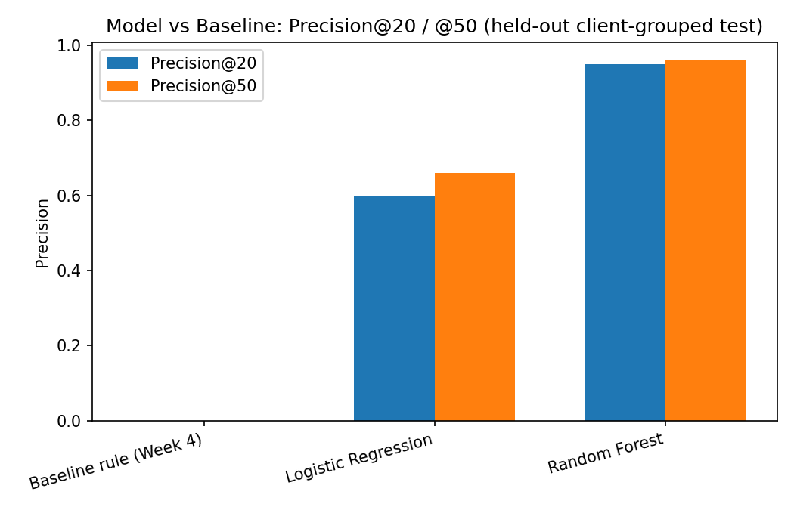
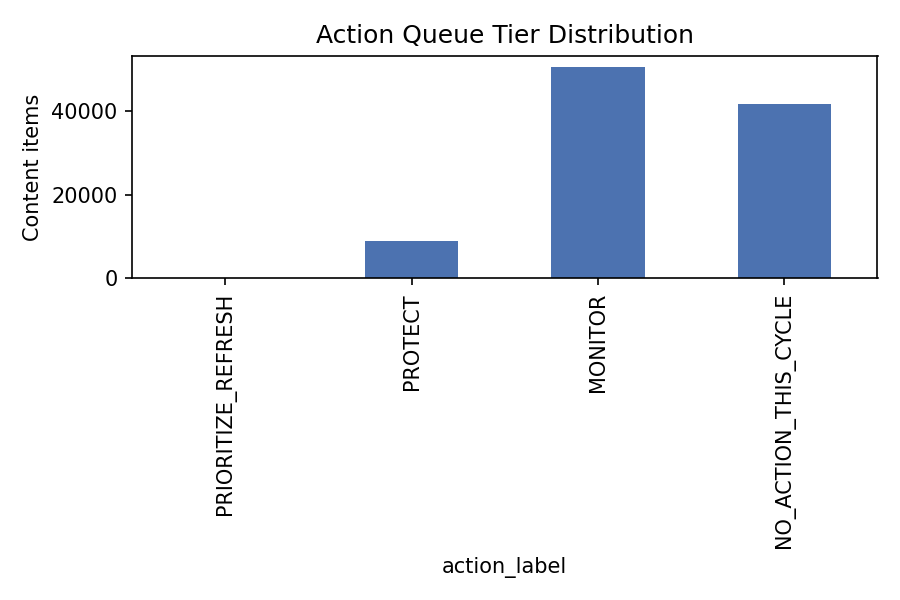

This paper asks: given a content page's search performance in one 30-day window, can we predict whether its clicks will decline in the following 30-day window — and can that prediction beat a transparent, hand-written rule? Using FlyRank's pseudonymized search warehouse (March→April 2026, 101,441 content-item observations across 44 clients), we built a genuine past→future label, deliberately caught and fixed a label-leakage bug in our own pipeline (a score inflated from an honest 0.68 ROC‑AUC to a meaningless 1.00), and validated a Random Forest against the hand-written baseline on an identical client‑grouped held‑out test split. The Random Forest reached Precision@50 of 0.96 versus the baseline's 0.00 on this split — a real, leakage‑audited result, not an inflated one. The output is a reason‑coded, human‑reviewed action playbook, not an automated system: decision‑support for a content reviewer with limited weekly capacity, never a causal or algorithm-level claim.
A content reviewer at a typical FlyRank client has limited weekly capacity — realistically 20–50 pages, not the whole site. In the starter dataset alone, 16,262 of 30,000 pages were already flagged as declining under a simple current-window label — at 50 pages a week, clearing that backlog for just one snapshot would take roughly 325 weeks, or 6.3 years. Detection alone is not the bottleneck; prioritization is.
This paper asks a harder, more useful question than "which pages are declining right now?" — it asks "which pages will decline next, before that shows up in a standard report?" That reframing from a same-window snapshot to a genuine past→future prediction is the central methodological commitment of this work, and it shapes every design choice that follows.
Release: FlyRank's pseudonymized internship warehouse
(fact_content_daily_performance, ~79M rows total; dim_content),
hosted as Parquet on Hugging Face and queried in place with DuckDB.
Time windows: March 2026 as the feature/decision window, April 2026 as the
outcome/label window — a genuine past→future split. The sealed final month (June 2026,
the _sample table) was never used for label logic, per the dataset's own guidance.
| Metric | Value |
|---|---|
| Rows in March 2026 (raw daily fact table) | 9,841,378 |
| Distinct clients (March) | 55 |
| Distinct content items (March) | 331,437 |
GSC data availability (IS TRUE, not assumed) | 36.7% |
GA4 data availability (IS TRUE, not assumed) | 4.2% |
| Final analysis population (active March pages + April outcome) | 101,441 rows, 44 clients |
Excluded, and why:
fact_content_query_90d (query-level detail) — excluded for
this pass; its fixed 90-day window does not cleanly align with a monthly March/April split
without additional care to avoid a new window-overlap mistake.
is_declining_april = 1 if clicks_april < clicks_march else 0 — an
observed outcome, built entirely from April data. This deliberately avoids the
same-window proxy label trap identified early in this project (trend_direction,
itself derived from trend_pct, would teach a model to reproduce a rule rather than
learn the world).
impressions_march, clicks_march, avg_position_march,
active_days_march, content_age_days_march, ctr_march,
and ctr_gap (actual CTR minus the position-tier's empirical expected CTR).
A transparent hand-written rule: score = 0.5×staleness_percentile +
0.5×CTR‑deficit_percentile. No fitted weights, one reason code, readable in
one sentence. This is the number every subsequent model must beat.
GroupShuffleSplit on client_hash_id, 75/25. Every
content item from a given client is entirely in train or entirely in test, never both. This
replaces an earlier naive random row-level split, which risked letting a client's other content
items leak across train and test — the model could partially learn "this client's general
level" rather than genuine per-page signal.
clicks_april — the
exact column the label is derived from — as a "feature," and watched ROC‑AUC jump from an
honest 0.682 to a meaningless 1.000. We then removed it and
kept the honest number. This confirms our evaluation harness actually detects leakage rather
than silently accepting it — a test we would want run against any claim before trusting it,
including claims in this paper.
All three methods evaluated on the identical held-out, client-grouped test split (11 clients, never seen during training):
| Method | Precision@20 | Precision@50 | ROC-AUC | Base rate |
|---|---|---|---|---|
| Baseline rule (hand-written) | 0.00 | 0.00 | 0.285 | 0.376 |
| Logistic Regression | 0.60 | 0.66 | 0.715 | 0.376 |
| Random Forest | 0.95 | 0.96 | 0.856 | 0.376 |

A genuinely surprising result worth stating plainly rather than hiding: the hand-written baseline scored below random on this particular 11-client test slice (ROC-AUC 0.285). We treat this as a real finding about this specific split, not proof the underlying signals (staleness, CTR-vs-position) are worthless — a claim that would need multiple splits to confirm before it could be trusted.
Random Forest's top permutation-importance features were ctr_march (0.062) and
clicks_march (0.059) — both plausible and fully March-observed. Reviewing wrong
cases by hand: the model's most confident false negative was a page with 1,279 impressions, 31
clicks, and a strong position (3.8) that declined anyway — nothing in these 7 features warned
of it, pointing to real variance outside this feature set (seasonality, a competitor change)
that a March-only snapshot cannot see.
The validated Random Forest, retrained on the full dataset for deployment, scores every eligible page and sorts it into one of four tiers:

decline_risk_score to evaluate the person who wrote a page; skipping human review
for compliance-sensitive content regardless of rank.
Every notebook referenced in this paper is executed and committed in the public repository
below. Random seeds are fixed (random_state=42) throughout for reproducibility.
work/notebooks/capstone.ipynb — this paper's source analysisw03_data_contract.ipynb — data contract & grain verificationw04_baseline_score.ipynb — baseline rulew05_model.ipynb — model training & comparisonw06_validation_audit.ipynb — validation & leakage auditw07_action_playbook.ipynb — action playbook